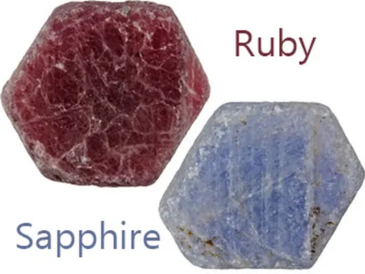

玻璃充填紅寶石：最危險的「美容術」
玻璃充填是紅寶石最危險的美容術——外表豔紅無瑕，內部卻藏著一碰就碎的玻璃心。

核心定義
玻璃充填（glass filling）是把高鉛玻璃或鉛鉍玻璃加熱熔融，灌入紅寶石的裂隙中，讓裂縫「癒合」、顏色變均勻、透明度提升的處理工藝。它與加熱不同——加熱是「優化」，充填是「再造」：充填物占據了裂隙空間，成為寶石的一部分。
危險在哪？充填玻璃的硬度遠低於紅寶石、怕熱（高溫會融化變色）、怕酸（酸洗會腐蝕），而且「充填區域」就是寶石的薄弱帶——碰撞或維修時可能崩裂、脫落，讓寶石一夜「破相」。更糟的是，充填物常帶藍綠色或橙色的閃光，專家一眼能看出「動過手腳」。
特徵與分類
| 處理 | 原理 | 風險 |
|---|---|---|
| 玻璃充填 | 熔融玻璃灌入裂隙 | 怕熱怕酸怕撞、可能脫落 |
| 染色 | 染料滲入裂隙 | 褪色、被溶劑洗出 |
| 加熱 | 高溫優化 | 風險低、市場接受 |
| 注油（紅寶少用） | 油填裂隙 | 乾燥後顯露原貌 |
高品質的玻璃充填能把一顆「滿身裂紋的廢料」變成看似豔紅通透的寶石，售價卻只值真品的零頭——這正是它最危險的地方：以假亂真的外觀＋低廉的價格，專門欺負不懂的買家。
科學原理
玻璃充填的鑑定特徵：裂隙內可見流動狀紋理、圓形氣泡、藍綠/橙色的閃光（干涉色）、以及充填區域與寶石本體折射率的明顯差異。十倍放大鏡下，這些線索相當明顯——前提是你看得夠仔細。
紫外燈也有用：部分充填玻璃在紫外光下會發螢光；顯微鏡暗場照明則讓氣泡與流動紋無所遁形。實驗室還能用反射光譜確認充填物的成分。
鑑定與鑑別方法
- 十倍放大鏡掃描裂隙：找流動紋、圓形氣泡、藍綠/橙閃光
- 用手電筒側照：充填區常與本體顏色不均
- 看裂隙邊緣：充填物與寶石交界處有「新月形」內凹
- 紫外燈：部分充填物發螢光
- 鍺石檢測筆/顯微鏡複查，高價值送實驗室
- 維修時提醒師傅：充填紅寶怕高溫，焊接要拆石
市場行情與保養建議
玻璃充填紅寶的市場價遠低於正常紅寶（常為正常品的一成甚至更低），但正因「外表太美」，常被當成高價真品出售。旅遊購物、直播拍賣是重災區——一條充填紅寶項鍊被喊成「緬甸鴿血紅」，是常見劇本。
自保策略：凡紅寶石「便宜得不像話＋紅得不像話」，先懷疑充填；要求權威證書並檢視處理欄；高價交易務必送實驗室。
常見誤區
它的主體是紅寶石沒錯，但玻璃充填是「再造」級處理，市場價值與天然紅寶天差地遠，且證書必須明確標示「玻璃充填」。說它是天然紅寶，是重大誤導。
錯。充填玻璃怕熱（焊接會熔）、怕酸（清潔劑會蝕）、怕撞（會崩落）。它的耐久性遠遜於紅寶石本體——這顆「夾心餅乾」經不起日常考驗。
冷知識
高鉛玻璃熔點低、折射率高，特別適合灌進裂隙裡「冒充」寶石的折射率——這是玻璃充填工藝的核心奧秘。
裂隙與充填物的折射率差異會造成薄膜干涉，讓裂縫在光下呈現藍綠或橙色的閃光——這是充填紅寶最顯眼的破綻，也是鑑定師的「捉姦利器」。
反直覺觀點
天然紅寶多帶裂隙與內含物；一顆又大又紅又「乾淨」的紅寶，若價格不匹配，多半是充填或合成的傑作。完美是誘餌，檢查才是護身符。
充填物被紫外線、清潔劑或時間侵蝕後，顏色會變化甚至顯露原貌——它的美是「借來的」，還得還回去。